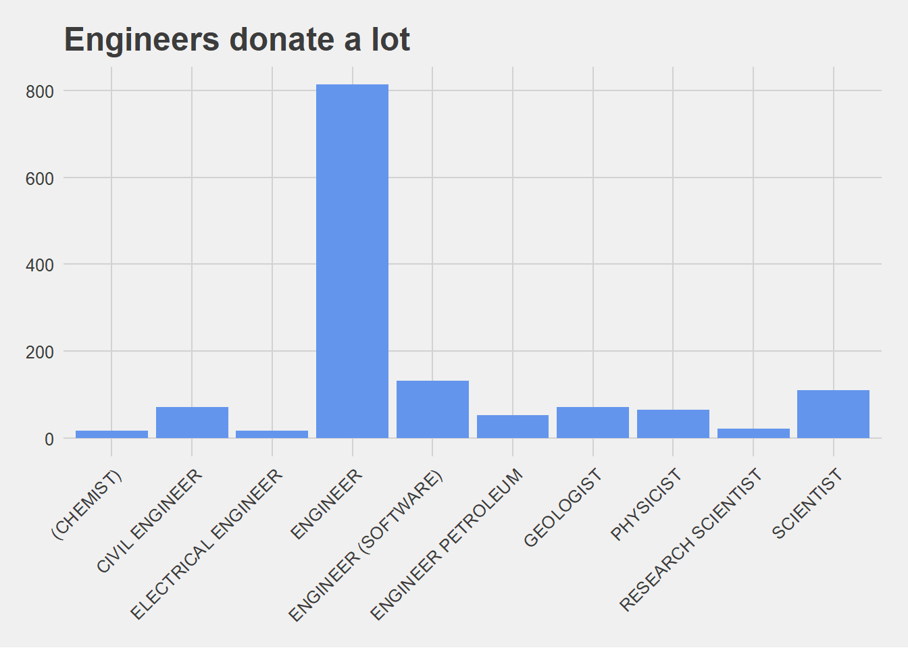
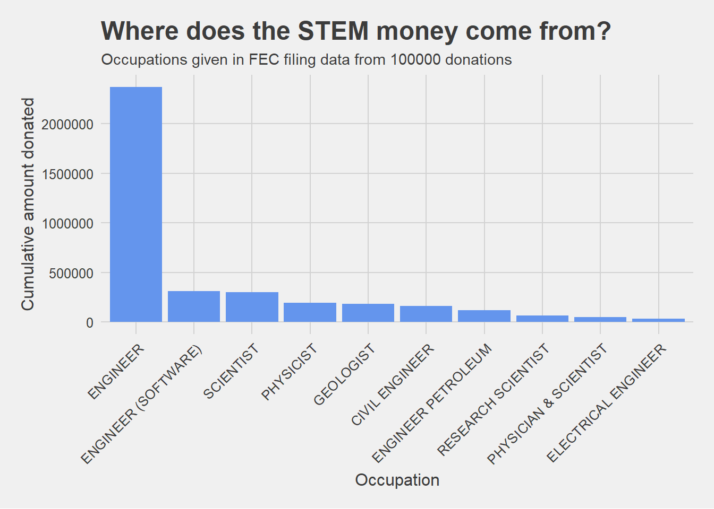
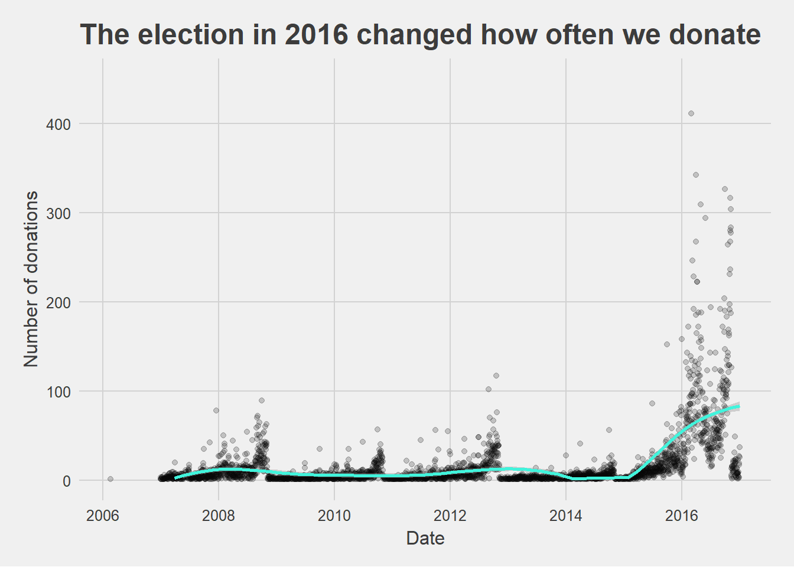
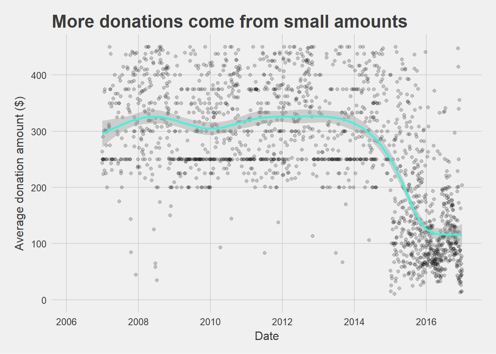
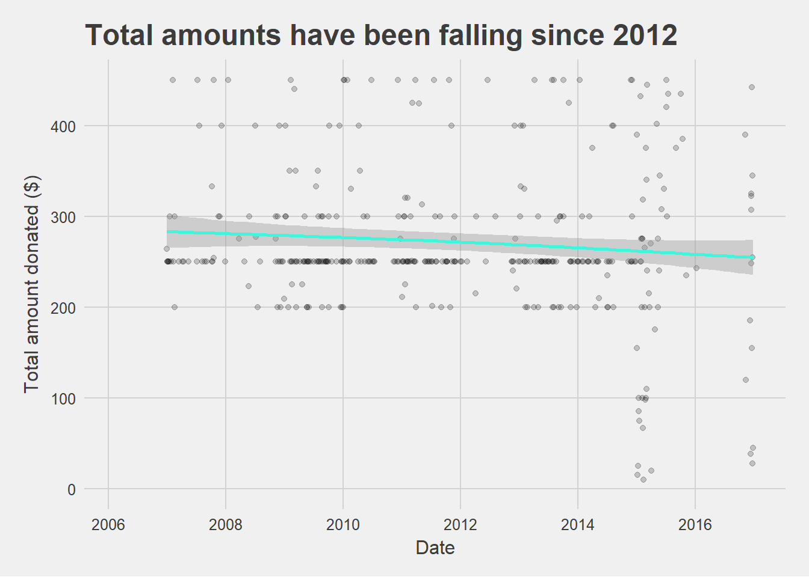
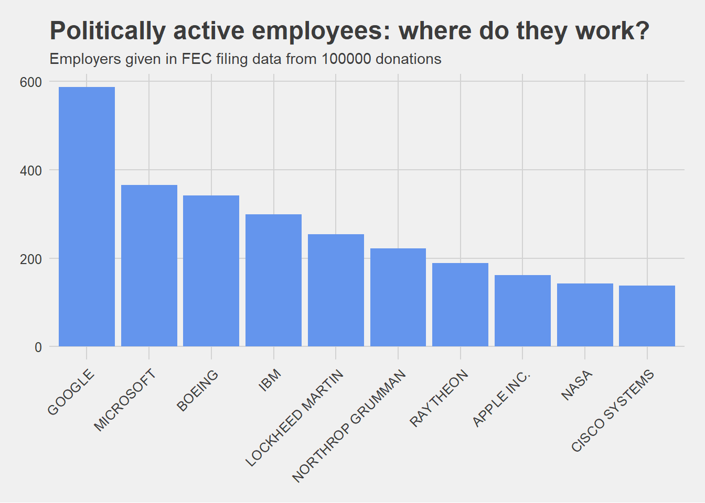
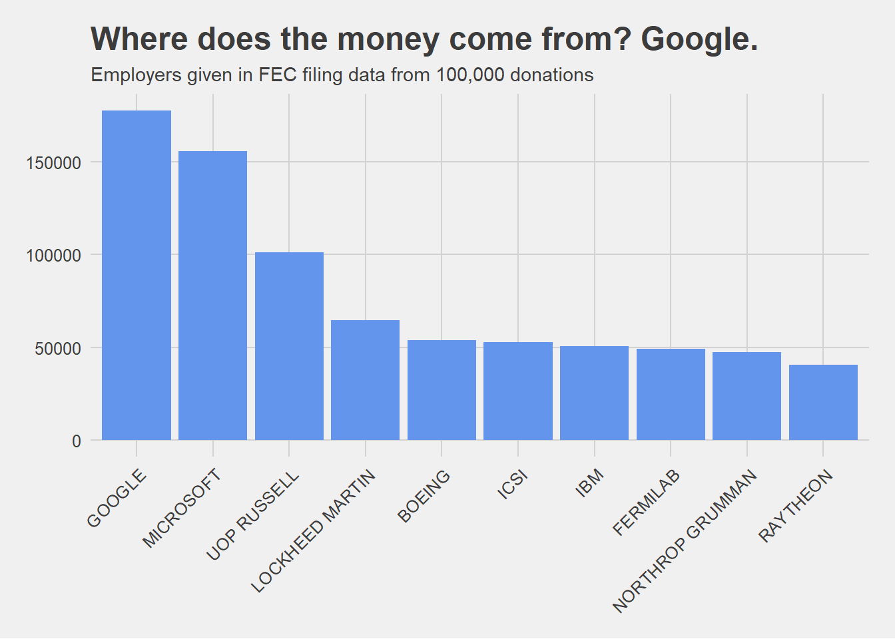

In this activity you’ll get an idea of how to work with dplyr to manipulate your data. It’s a flexible and readable way to work with data after a little bit of practice! The goal for this activity should be to gain familiarity with the main data verbs (I’ll explain what those are later!) and start to develop some intuition for when to use each one, and in what order. If you’ve worked with SQL before, you’ll notice some similarities.
We are using data from fivethirtyeight’s github page on political donations from the STEM community metadata. The data were featured in the article when scientists donate to politicians, it’s usually to democrats.
For this particular activity, I assume you have some familiarity with
RMarkdown
Dataframes in R (have a general idea of what they are and how to work with them)
ggplot2 (optional!)
We will load the tidyverse package since it includes more than just dplyr. We will also load the lubridate package for one question that involves formatting dates.
# if you need to install tidyverse, the code is install.packages("tidyverse")
library(tidyverse)
library(lubridate) # install with install.packages("lubridate")
library(ggthemes) # in case you want to make some plots!I like loading from the github page, and in this case it looks like the fivethirtyeight package does not yet include this data! When you load this, you’ll notice it takes a while. With this in mind, write {r cache=TRUE} in place of the usual {r} at the top of the chunk. This caches (saves) your data so that it doesn’t have to load every time you knit. But also with this in mind, be careful that loading the data is the only code in that chunk! You don’t want to cache other things.
# from the github url
donations <- read_csv("https://media.githubusercontent.com/media/fivethirtyeight/data/master/science-giving/science_federal_giving.csv")This table is quite large– in fact it has 881793 observations. We are going to take a random sample of 100000 entries so that it’s a little easier to work with. We will use sample_n() to take a random sample of n observations (our first dplyr function!).
donations_small <- sample_n(tbl = donations, size = 100000) # take a sample of 100000 observations from the donations table. str(donations_small)## Classes 'tbl_df', 'tbl' and 'data.frame': 100000 obs. of 31 variables:
## $ cmte_nm : chr "ROMNEY FOR PRESIDENT INC." NA "OBAMA FOR AMERICA" "RICK SANTORUM FOR PRESIDENT INC." ...
## $ cmte_id : chr "C00431171" NA "C00431445" "C00496034" ...
## $ cmte_tp : chr "P" NA "P" "P" ...
## $ cmte_pty : chr "REP" NA "DEM" "REP" ...
## $ cand_name : chr "ROMNEY, MITT" NA "OBAMA, BARACK" "SANTORUM, RICHARD J." ...
## $ cand_pty_affiliation: chr "REP" NA "DEM" "REP" ...
## $ cand_office_st : chr "US" NA "US" "US" ...
## $ cand_office : chr "P" NA "P" "P" ...
## $ cand_office_district: chr "0" NA "0" "0" ...
## $ cand_status : chr "C" NA "C" "C" ...
## $ rpt_tp : chr "M9" NA "12G" "M4" ...
## $ transaction_pgi : chr "P" NA "G" "P" ...
## $ transaction_tp : chr "15" NA "15" "15" ...
## $ entity_tp : chr "IND" NA "IND" "IND" ...
## $ cleaned_name : chr "GUCCIONE, LOUIS J. MR." NA "FORD, GLEN" "FARRIS, MELVIN" ...
## $ city : chr "EASTCHESTER" NA "AUSTIN" "PRAIRIE DU CHIEN" ...
## $ state : chr "NY" NA "TX" "WI" ...
## $ zip_code : int 10709 NA 78704 53821 NA NA NA NA 841151836 NA ...
## $ employer : chr "INTER DIGITAL INC." NA "DEMAND MEDIA/PLUCK" "3M" ...
## $ cleanedoccupation : chr "ENGINEER" NA "ENGINEER (SOFTWARE)" "ENGINEER" ...
## $ classification : chr "Engineer" NA "Engineer" "Engineer" ...
## $ transaction_dt : int 8162012 NA 10082012 3052012 NA NA NA NA 1212016 NA ...
## $ cycle : int 2012 NA 2012 2012 NA NA NA NA 2016 NA ...
## $ transaction_amt : int 200 NA 200 200 NA NA NA NA 25 NA ...
## $ 2016_dollars : num 209 NA 209 209 NA NA NA NA 25 NA ...
## $ other_id : chr NA NA NA NA ...
## $ tran_id : chr "SA17.2062014" NA "C24193008" "SA17.800453" ...
## $ file_num : int 896743 NA 897092 780310 NA NA NA NA 1077648 NA ...
## $ memo_cd : chr NA NA NA NA ...
## $ memo_text : chr NA NA NA NA ...
## $ sub_id : num 4.12e+18 NA 4.12e+18 4.04e+18 NA ...dplyr works by using data verbs to act on your data. The same way we use verbs to signal action in a natural language, data verbs perform an action on data. I’ll divide them into some broad categories to start, then give you some practice questions to bring it all together! Similar to ggplot2, dplyr uses a layering framework, so you’ll start to see repeated patterns pretty quickly! dplyr layers through pipes (%>%). In essence, data “flows” through the pipes. This is helpful because it takes out the need for intermediate tables when you are wrangling. The structure is best explained through examples, but the most important thing to note is that when you’re using pipes you don’t need to specify a dataframe in your data verb function. And order matters for the data verbs!
select() and mutate() perform actions on columns (as opposed to rows). select() pulls out (or drops) columns that you specify. mutate() creates new columns.
Our donations_small table has 31 variables, and chances are pretty good we don’t need all of them. Let’s get rid of some!
donations_small_select <- # name the new table
donations_small %>% # start with the original table, then pass that down to the next function with a pipe (%>%)
select(c("cand_name", "cand_pty_affiliation", "cleanedoccupation", "transaction_dt", "transaction_amt", "city", "state", "zip_code", "cycle")) # pass a vector of column names that you want to select from the original data.
str(donations_small_select) # now there are only 9 variables!## Classes 'tbl_df', 'tbl' and 'data.frame': 100000 obs. of 9 variables:
## $ cand_name : chr "ROMNEY, MITT" NA "OBAMA, BARACK" "SANTORUM, RICHARD J." ...
## $ cand_pty_affiliation: chr "REP" NA "DEM" "REP" ...
## $ cleanedoccupation : chr "ENGINEER" NA "ENGINEER (SOFTWARE)" "ENGINEER" ...
## $ transaction_dt : int 8162012 NA 10082012 3052012 NA NA NA NA 1212016 NA ...
## $ transaction_amt : int 200 NA 200 200 NA NA NA NA 25 NA ...
## $ city : chr "EASTCHESTER" NA "AUSTIN" "PRAIRIE DU CHIEN" ...
## $ state : chr "NY" NA "TX" "WI" ...
## $ zip_code : int 10709 NA 78704 53821 NA NA NA NA 841151836 NA ...
## $ cycle : int 2012 NA 2012 2012 NA NA NA NA 2016 NA ...The format of the transaction date (transaction_dt) right now is a little hard to read (MMDDYYYY). We can use the lubridate package to make them more human-readable. The function mdy() (from lubridate) takes a date in “month day year” and converts it to “year-month-day”. It also then stores that value as a date object!
donations_small_mutate <- # create a new table
donations_small %>% # start with our original data and pass it down to the mutate function
mutate(date_formatted = mdy(transaction_dt)) # create a new variable called date_formatted that is the output from the mdy() function
str(donations_small_mutate)## Classes 'tbl_df', 'tbl' and 'data.frame': 100000 obs. of 32 variables:
## $ cmte_nm : chr "ROMNEY FOR PRESIDENT INC." NA "OBAMA FOR AMERICA" "RICK SANTORUM FOR PRESIDENT INC." ...
## $ cmte_id : chr "C00431171" NA "C00431445" "C00496034" ...
## $ cmte_tp : chr "P" NA "P" "P" ...
## $ cmte_pty : chr "REP" NA "DEM" "REP" ...
## $ cand_name : chr "ROMNEY, MITT" NA "OBAMA, BARACK" "SANTORUM, RICHARD J." ...
## $ cand_pty_affiliation: chr "REP" NA "DEM" "REP" ...
## $ cand_office_st : chr "US" NA "US" "US" ...
## $ cand_office : chr "P" NA "P" "P" ...
## $ cand_office_district: chr "0" NA "0" "0" ...
## $ cand_status : chr "C" NA "C" "C" ...
## $ rpt_tp : chr "M9" NA "12G" "M4" ...
## $ transaction_pgi : chr "P" NA "G" "P" ...
## $ transaction_tp : chr "15" NA "15" "15" ...
## $ entity_tp : chr "IND" NA "IND" "IND" ...
## $ cleaned_name : chr "GUCCIONE, LOUIS J. MR." NA "FORD, GLEN" "FARRIS, MELVIN" ...
## $ city : chr "EASTCHESTER" NA "AUSTIN" "PRAIRIE DU CHIEN" ...
## $ state : chr "NY" NA "TX" "WI" ...
## $ zip_code : int 10709 NA 78704 53821 NA NA NA NA 841151836 NA ...
## $ employer : chr "INTER DIGITAL INC." NA "DEMAND MEDIA/PLUCK" "3M" ...
## $ cleanedoccupation : chr "ENGINEER" NA "ENGINEER (SOFTWARE)" "ENGINEER" ...
## $ classification : chr "Engineer" NA "Engineer" "Engineer" ...
## $ transaction_dt : int 8162012 NA 10082012 3052012 NA NA NA NA 1212016 NA ...
## $ cycle : int 2012 NA 2012 2012 NA NA NA NA 2016 NA ...
## $ transaction_amt : int 200 NA 200 200 NA NA NA NA 25 NA ...
## $ 2016_dollars : num 209 NA 209 209 NA NA NA NA 25 NA ...
## $ other_id : chr NA NA NA NA ...
## $ tran_id : chr "SA17.2062014" NA "C24193008" "SA17.800453" ...
## $ file_num : int 896743 NA 897092 780310 NA NA NA NA 1077648 NA ...
## $ memo_cd : chr NA NA NA NA ...
## $ memo_text : chr NA NA NA NA ...
## $ sub_id : num 4.12e+18 NA 4.12e+18 4.04e+18 NA ...
## $ date_formatted : Date, format: "2012-08-16" NA ...filter() and arrange() perform actions on the rows of our dataframe. filter() takes out observations we don’t want and arrange() sorts our data however we specify!
This data is pretty messy! At least for me, one of the most important variables is the transaction amount (transaction_amt), but there are quite a few NA values in the data. Let’s filter out the NA cases!
donations_small_filter <- # create a new table
donations_small %>% # start with our original data and pass it down to the mutate function
filter(!is.na(transaction_amt)) # this says "take out any na amounts". The "!" means "not", so the whole function is finding any "not na" values
str(donations_small_filter)## Classes 'tbl_df', 'tbl' and 'data.frame': 53362 obs. of 31 variables:
## $ cmte_nm : chr "ROMNEY FOR PRESIDENT INC." "OBAMA FOR AMERICA" "RICK SANTORUM FOR PRESIDENT INC." "BERNIE 2016" ...
## $ cmte_id : chr "C00431171" "C00431445" "C00496034" "C00577130" ...
## $ cmte_tp : chr "P" "P" "P" "P" ...
## $ cmte_pty : chr "REP" "DEM" "REP" "DEM" ...
## $ cand_name : chr "ROMNEY, MITT" "OBAMA, BARACK" "SANTORUM, RICHARD J." "SANDERS, BERNARD" ...
## $ cand_pty_affiliation: chr "REP" "DEM" "REP" "DEM" ...
## $ cand_office_st : chr "US" "US" "US" "US" ...
## $ cand_office : chr "P" "P" "P" "P" ...
## $ cand_office_district: chr "0" "0" "0" "0" ...
## $ cand_status : chr "C" "C" "C" "C" ...
## $ rpt_tp : chr "M9" "12G" "M4" "M2" ...
## $ transaction_pgi : chr "P" "G" "P" "P" ...
## $ transaction_tp : chr "15" "15" "15" "15" ...
## $ entity_tp : chr "IND" "IND" "IND" "IND" ...
## $ cleaned_name : chr "GUCCIONE, LOUIS J. MR." "FORD, GLEN" "FARRIS, MELVIN" "GILBERT, NATHAN" ...
## $ city : chr "EASTCHESTER" "AUSTIN" "PRAIRIE DU CHIEN" "SALT LAKE CITY" ...
## $ state : chr "NY" "TX" "WI" "UT" ...
## $ zip_code : int 10709 78704 53821 841151836 14691180 146082430 48176 852515741 857502402 207404331 ...
## $ employer : chr "INTER DIGITAL INC." "DEMAND MEDIA/PLUCK" "3M" "DELCAM USA" ...
## $ cleanedoccupation : chr "ENGINEER" "ENGINEER (SOFTWARE)" "ENGINEER" "ENGINEER (SOFTWARE)" ...
## $ classification : chr "Engineer" "Engineer" "Engineer" "Engineer" ...
## $ transaction_dt : int 8162012 10082012 3052012 1212016 3152016 12312015 12162007 9262016 7302015 9192015 ...
## $ cycle : int 2012 2012 2012 2016 2016 2016 2008 2016 2016 2016 ...
## $ transaction_amt : int 200 200 200 25 35 3 500 250 100 250 ...
## $ 2016_dollars : num 209 209 209 25 35 ...
## $ other_id : chr NA NA NA NA ...
## $ tran_id : chr "SA17.2062014" "C24193008" "SA17.800453" "VPF7BHNKSN6" ...
## $ file_num : int 896743 897092 780310 1077648 1066824 1077572 329578 1137625 1029000 1035771 ...
## $ memo_cd : chr NA NA NA NA ...
## $ memo_text : chr NA NA NA "* EARMARKED CONTRIBUTION: SEE BELOW" ...
## $ sub_id : num 4.12e+18 4.12e+18 4.04e+18 4.06e+18 4.05e+18 ...But now if we look at the data there are a few negative transaction amounts. There’s probably a reason for that, but in my little bit of googling I didn’t find a good explanation. For the sake of learning about using multiple arguments with filter(), let’s take them out!
donations_small_filter <-
donations_small %>% # everything up to this point is the same as the last chunk
filter(!is.na(transaction_amt), transaction_amt > 0) # add the second filter condition (positive amount) with a comma after the first condition. The comma means "and". To do "or" you can use "|".
str(donations_small_filter)## Classes 'tbl_df', 'tbl' and 'data.frame': 53118 obs. of 31 variables:
## $ cmte_nm : chr "ROMNEY FOR PRESIDENT INC." "OBAMA FOR AMERICA" "RICK SANTORUM FOR PRESIDENT INC." "BERNIE 2016" ...
## $ cmte_id : chr "C00431171" "C00431445" "C00496034" "C00577130" ...
## $ cmte_tp : chr "P" "P" "P" "P" ...
## $ cmte_pty : chr "REP" "DEM" "REP" "DEM" ...
## $ cand_name : chr "ROMNEY, MITT" "OBAMA, BARACK" "SANTORUM, RICHARD J." "SANDERS, BERNARD" ...
## $ cand_pty_affiliation: chr "REP" "DEM" "REP" "DEM" ...
## $ cand_office_st : chr "US" "US" "US" "US" ...
## $ cand_office : chr "P" "P" "P" "P" ...
## $ cand_office_district: chr "0" "0" "0" "0" ...
## $ cand_status : chr "C" "C" "C" "C" ...
## $ rpt_tp : chr "M9" "12G" "M4" "M2" ...
## $ transaction_pgi : chr "P" "G" "P" "P" ...
## $ transaction_tp : chr "15" "15" "15" "15" ...
## $ entity_tp : chr "IND" "IND" "IND" "IND" ...
## $ cleaned_name : chr "GUCCIONE, LOUIS J. MR." "FORD, GLEN" "FARRIS, MELVIN" "GILBERT, NATHAN" ...
## $ city : chr "EASTCHESTER" "AUSTIN" "PRAIRIE DU CHIEN" "SALT LAKE CITY" ...
## $ state : chr "NY" "TX" "WI" "UT" ...
## $ zip_code : int 10709 78704 53821 841151836 14691180 146082430 48176 852515741 857502402 207404331 ...
## $ employer : chr "INTER DIGITAL INC." "DEMAND MEDIA/PLUCK" "3M" "DELCAM USA" ...
## $ cleanedoccupation : chr "ENGINEER" "ENGINEER (SOFTWARE)" "ENGINEER" "ENGINEER (SOFTWARE)" ...
## $ classification : chr "Engineer" "Engineer" "Engineer" "Engineer" ...
## $ transaction_dt : int 8162012 10082012 3052012 1212016 3152016 12312015 12162007 9262016 7302015 9192015 ...
## $ cycle : int 2012 2012 2012 2016 2016 2016 2008 2016 2016 2016 ...
## $ transaction_amt : int 200 200 200 25 35 3 500 250 100 250 ...
## $ 2016_dollars : num 209 209 209 25 35 ...
## $ other_id : chr NA NA NA NA ...
## $ tran_id : chr "SA17.2062014" "C24193008" "SA17.800453" "VPF7BHNKSN6" ...
## $ file_num : int 896743 897092 780310 1077648 1066824 1077572 329578 1137625 1029000 1035771 ...
## $ memo_cd : chr NA NA NA NA ...
## $ memo_text : chr NA NA NA "* EARMARKED CONTRIBUTION: SEE BELOW" ...
## $ sub_id : num 4.12e+18 4.12e+18 4.04e+18 4.06e+18 4.05e+18 ...Now let’s order the donations from greatest to least!
donations_small_ordered <- # create a new table
donations_small %>% # start with our original data
arrange(desc(transaction_amt)) # arrange the table according to the transaction amount. desc tells R that we want the values to be descening (greatest to least!)
str(donations_small_ordered)## Classes 'tbl_df', 'tbl' and 'data.frame': 100000 obs. of 31 variables:
## $ cmte_nm : chr "NRCC" "DSCC" "REPUBLICAN NATIONAL COMMITTEE" "NRSC" ...
## $ cmte_id : chr "C00075820" "C00042366" "C00003418" "C00027466" ...
## $ cmte_tp : chr "Y" "Y" "Y" "Y" ...
## $ cmte_pty : chr "REP" "DEM" "REP" "REP" ...
## $ cand_name : chr NA NA NA NA ...
## $ cand_pty_affiliation: chr "NULL" "NULL" "NULL" "NULL" ...
## $ cand_office_st : chr "NULL" "NULL" "NULL" "NULL" ...
## $ cand_office : chr "NULL" "NULL" "NULL" "NULL" ...
## $ cand_office_district: chr "NULL" "NULL" "NULL" "NULL" ...
## $ cand_status : chr "NULL" "NULL" "NULL" "NULL" ...
## $ rpt_tp : chr "YE" "M3" "M10" "M5" ...
## $ transaction_pgi : chr "P" "P" "P" "P" ...
## $ transaction_tp : chr "32" "15" "15" "15" ...
## $ entity_tp : chr "IND" "IND" "IND" "IND" ...
## $ cleaned_name : chr "RUSSELL, THOMAS H. MR." "SALL, JOHN P" "NEW, WILLIAM C. MR." "RASTIN, THOMAS MR" ...
## $ city : chr "TULSA" "CARY" "MORGAN CITY" "MOUNT VERNON" ...
## $ state : chr "OK" "NC" "LA" "OH" ...
## $ zip_code : int 741365718 275133067 703802449 430503842 947072052 352265013 940246537 99163 78520 33149 ...
## $ employer : chr "UOP RUSSELL" "SAS INSTITUTE, INC." "NEW INDUSTRIES INC." "ARIEL CORPORATION" ...
## $ cleanedoccupation : chr "ENGINEER" "EXECUTIVE / STATISTICIAN" "ENGINEER" "ENGINEERING VICE PRESIDENT" ...
## $ classification : chr "Engineer" "Math-Stat" "Engineer" "Engineer" ...
## $ transaction_dt : int 12282015 2242016 9182015 4292016 7292014 10102014 11052013 12192011 4122010 7092008 ...
## $ cycle : int 2016 2016 2016 2016 2014 2014 2014 2012 2010 2008 ...
## $ transaction_amt : int 100200 33400 33400 33400 32400 32400 32400 30800 30400 28500 ...
## $ 2016_dollars : num 101603 33400 33868 33400 32821 ...
## $ other_id : chr NA NA NA NA ...
## $ tran_id : chr "SA17.16090897" "SA03291642731051" "2015M10L11AI04571" "SA06101689341267" ...
## $ file_num : int 1045467 1057624 1030648 1068169 949880 985167 898497 764824 471149 363474 ...
## $ memo_cd : chr "X" NA NA NA ...
## $ memo_text : chr "JFC ATTRIB: TEAM RYAN" NA NA "CONTRIBUTION" ...
## $ sub_id : num 4.02e+18 2.03e+18 4.10e+18 2.06e+18 2.09e+18 ...We can also perform actions on a “group” of variables. You can think of this as changing the case/observation in your table. A case/observation is what one row represents. In the donations table, a case/observation is one particular transaction. group_by() and summarise() work together to help us manipulate the observations.
group_by() specifies how we want to group our observations (what variable will serve as the base of our obeservation) and summarise() specifies how we want to talk about those groups. Questions that require grouping often have “per” or “by” somewhere in them, or some variation of that. I think seeing this is a picture helps!
Let’s find total donations per candidate. In this question we will see a longer series of functions with pipes!
donations_small_cand_groups <- # create a new table
donations_small %>% # start with the original data and pass it down to group_by
group_by(cand_name) %>% # we are counting per candidate, so that's the grouping variable
summarise(total = sum(transaction_amt, na.rm = TRUE)) # create a new variable that sums the transactions for each candidate (removing the na values with na.rm = TRUE) then save it as "total". The new variable name can be anything! You aren't bound to using "total".
str(donations_small_cand_groups)## Classes 'tbl_df', 'tbl' and 'data.frame': 1863 obs. of 2 variables:
## $ cand_name: chr "ABERCROMBIE, NEIL" "ABRAHAM, RALPH LEE" "ACHADJIAN, KHATCHIK" "ADAMS, ALMA SHEALEY" ...
## $ total : int 1300 1500 4000 125 500 250 500 250 550 7930 ...Notice that this new table has only 2 variables! What happened?! If you group your observations, it won’t keep any information aside from the grouping variable and the summarised information. There are some tricks to save more information, but we can talk about those later.
Let’s also find the total donations per occupation type.
donations_small_occ_groups <- # create a new table
donations_small %>% # start with the original data and pass it to group_by
group_by(cleanedoccupation) %>% # we are counting per occupation, so that's the grouping variable
summarise(total = sum(transaction_amt, na.rm = TRUE)) # the summarise function is the exact same as the one above! Even though we are using different groupings.
str(donations_small_occ_groups)## Classes 'tbl_df', 'tbl' and 'data.frame': 3173 obs. of 2 variables:
## $ cleanedoccupation: chr "''DOMESTIC ENGINEER!''" "(CHEMIST)" "1ST CLASS OPERATING ENGINEER" "8TH GRADE MATH TEACHER" ...
## $ total : int 24390 152615 50 55 13 500 285 1000 250 250 ...Another common use of summarise() is finding the total number of observations in each group. To do this, you will use the function n(), and it doesn’t take any arguments. Let’s see an example.
Which party has received the most donations?
donations_most_grouped <- # create a new table
donations_small %>% # start with our original data
group_by(cand_pty_affiliation) %>% # we want to calculate per party
summarise(donations_n = n()) # n just counts how many observations were in each party group. I think of it as "n observations" or "number of observations" to remember the "n" part.
str(donations_most_grouped)## Classes 'tbl_df', 'tbl' and 'data.frame': 13 obs. of 2 variables:
## $ cand_pty_affiliation: chr "CST" "DEM" "GRE" "IND" ...
## $ donations_n : int 2 32624 109 77 174 14 2 9823 13 10518 ...In the above examples, we started from scratch each time. But now that we have seen the basics, trying combining the methods to get cleaner final data! For example, work with NA transaction amounts filtered out.
Are there states that tend to have more active donors? Cities?
How many people donated less than $25 or more than $200?
Who are the biggest donors? You could possibly define this as anyone who donated at least 1.5x the mean of the donations per person. You could also define this as the more standard “outlier” and calculate 1.5x the interquartile range then use that to find outliers. Let me know if this calculation is new for you!
What is the name, city, state, and occupation of the person who has donated the highest number of times total?
Which candidate has received the most donations? And which candidate has received the most total money in donations?
Try making a plot to help answer each question for ggplot practice, too!
Of major donors (let’s say more than $200 for this question), what professions are most common?
Which professions tend to donate more to which candidates? (You might need to have two grouping variables for this!).
Check out some of the temporal patterns! You could look at how donations are affected by major speeches, conventions, announcements, etc.
Did you see anything interesting in the data? Or in one of the other practice questions? Explore it!
states <- donations_small %>%
group_by(state) %>%
summarize(total_donors = n(),
total_dollars = sum(transaction_amt, na.rm = TRUE)) %>%
arrange(desc(total_donors))
str(states)## Classes 'tbl_df', 'tbl' and 'data.frame': 61 obs. of 3 variables:
## $ state : chr NA "CA" "TX" "NY" ...
## $ total_donors : int 46721 11538 4540 2914 2906 2791 1958 1875 1794 1693 ...
## $ total_dollars: int 55681 3001120 1626395 698710 693575 647527 546385 535372 455786 438736 ...donations_extremes <- donations_small %>%
filter(transaction_amt > 200 | transaction_amt < 25)
nrow(donations_extremes)## [1] 29738biggest_donors_mean <- donations_small %>%
filter(transaction_amt > 1.5 * mean(transaction_amt, na.rm=TRUE))
nrow(biggest_donors_mean)## [1] 9512biggest_donors_iqr <- donations_small %>%
filter(transaction_amt > 1.5 * IQR(transaction_amt, na.rm = TRUE) * quantile(transaction_amt, 0.75, na.rm = TRUE))
nrow(biggest_donors_iqr)## [1] 1biggest_donors_iqr## # A tibble: 1 x 31
## cmte_nm cmte_id cmte_tp cmte_pty cand_name cand_pty_affiliation
## <chr> <chr> <chr> <chr> <chr> <chr>
## 1 NRCC C00075820 Y REP <NA> NULL
## # ... with 25 more variables: cand_office_st <chr>, cand_office <chr>,
## # cand_office_district <chr>, cand_status <chr>, rpt_tp <chr>,
## # transaction_pgi <chr>, transaction_tp <chr>, entity_tp <chr>,
## # cleaned_name <chr>, city <chr>, state <chr>, zip_code <int>,
## # employer <chr>, cleanedoccupation <chr>, classification <chr>,
## # transaction_dt <int>, cycle <int>, transaction_amt <int>,
## # `2016_dollars` <dbl>, other_id <chr>, tran_id <chr>, file_num <int>,
## # memo_cd <chr>, memo_text <chr>, sub_id <dbl>most_often_donor <- donations_small %>%
group_by(cleaned_name) %>%
summarize(total = n(),
state = min(state),
city = min(city),
occupation = min(cleanedoccupation)) %>%
filter(!is.na(cleaned_name)) %>% # take out NA name
arrange(desc(total))
head(most_often_donor)## # A tibble: 6 x 5
## cleaned_name total state city occupation
## <chr> <int> <chr> <chr> <chr>
## 1 SPURR, CHARLES 84 MA WAKEFIELD ENGINEER (SOFTWARE)
## 2 BROWNLEE, MICHAEL 41 NY NEW YORK PHYSICIAN & SCIENTIST
## 3 LANE, COURTNEY 40 CA VENTURA RESEARCH SCIENTIST
## 4 WARNER, RICHARD 40 TX ARLINGTON ENGINEER
## 5 SMITH, PHILIP 36 CO DENVER BI ENGINEER
## 6 WARTENBERG, NIELS 36 MN CHASKA ENGINEER# I looked up Charles Spurr and he donates a lot to Tammy Duckworth!candidates_most <- donations_small %>%
group_by(cand_name) %>%
summarize(times = n(),
money = sum(transaction_amt, na.rm=TRUE)) %>%
filter(!is.na(cand_name)) %>%
arrange(desc(times))
head(candidates_most)## # A tibble: 6 x 3
## cand_name times money
## <chr> <int> <int>
## 1 SANDERS, BERNARD 11888 690906
## 2 CLINTON, HILLARY RODHAM 9021 1094260
## 3 OBAMA, BARACK 4300 1871887
## 4 "CRUZ, RAFAEL EDWARD \"TED\"" 1892 255489
## 5 ROMNEY, MITT 815 455661
## 6 PAUL, RON 800 337880head(arrange(candidates_most, desc(money)))## # A tibble: 6 x 3
## cand_name times money
## <chr> <int> <int>
## 1 OBAMA, BARACK 4300 1871887
## 2 CLINTON, HILLARY RODHAM 9021 1094260
## 3 SANDERS, BERNARD 11888 690906
## 4 ROMNEY, MITT 815 455661
## 5 MCCAIN, JOHN S 589 340218
## 6 PAUL, RON 800 337880professions_common <- donations_small %>%
filter(transaction_amt > 1000, !is.na(cleanedoccupation)) %>%
group_by(cleanedoccupation) %>%
summarise(total = n(),
money = sum(transaction_amt, na.rm=TRUE))
professions_common %>%
arrange(desc(total)) %>%
head(10) %>%
ggplot(aes(x = cleanedoccupation, y = total)) +
geom_bar(stat="identity", fill = "cornflowerblue") +
theme_fivethirtyeight() +
theme(axis.text.x = element_text(angle = 45, hjust = 1)) +
labs(title = "Engineers donate a lot")
professions_common$cleanedoccupation <- factor(professions_common$cleanedoccupation, levels = professions_common$cleanedoccupation[order(professions_common$money, decreasing = TRUE)])
professions_common %>%
arrange(desc(money)) %>%
head(10) %>%
ggplot(aes(x = cleanedoccupation, y = money)) +
geom_bar(stat="identity", fill = "cornflowerblue") +
theme_fivethirtyeight() +
theme(axis.text.x = element_text(angle = 45, hjust = 1),
axis.title = element_text()) +
labs(y = "Cumulative amount donated",
title = "Where does the STEM money come from?",
subtitle = "Occupations given in FEC filing data from 100000 donations",
x = "Occupation")
double_group <- donations_small %>%
filter(!is.na(cand_name), !is.na(cleanedoccupation)) %>% # I want only entries with occupation and candidate listed
group_by(cand_name, cleanedoccupation) %>%
summarize(times = n(),
money = sum(transaction_amt, na.rm = TRUE)) %>%
arrange(desc(money))
head(double_group)## # A tibble: 6 x 4
## # Groups: cand_name [4]
## cand_name cleanedoccupation times money
## <chr> <chr> <int> <int>
## 1 OBAMA, BARACK ENGINEER 1182 492763
## 2 CLINTON, HILLARY RODHAM ENGINEER 2392 339441
## 3 OBAMA, BARACK ENGINEER (SOFTWARE) 627 295259
## 4 OBAMA, BARACK SCIENTIST 494 222209
## 5 ROMNEY, MITT ENGINEER 373 221234
## 6 SANDERS, BERNARD ENGINEER (SOFTWARE) 3262 220244over_time <- donations_small %>%
mutate(date = mdy(transaction_dt)) %>%
filter(!is.na(date)) %>%
group_by(date) %>%
summarize(total = n(),
money = sum(transaction_amt, na.rm = TRUE),
mean = mean(transaction_amt, na.rm = TRUE))
ggplot(over_time, aes(x = date, y = total)) +
geom_point(alpha = 0.2, color = "gray2") +
geom_smooth(color = "#41f4dc" ) +
ylim(0,450) +
theme_fivethirtyeight() +
theme(axis.title = element_text()) +
labs(title = "The election in 2016 changed how often we donate",
y = "Number of donations",
x = "Date") ## `geom_smooth()` using method = 'gam'## Warning: Removed 14 rows containing missing values (geom_smooth).
ggplot(over_time, aes(x = date, y = mean)) +
geom_point(alpha = 0.2, color = "gray2") +
geom_smooth(color = "#41f4dc" ) +
ylim(0,450) +
theme_fivethirtyeight() +
theme(axis.title = element_text()) +
labs(title = "More donations come from small amounts",
y = "Average donation amount ($)",
x = "Date") ## `geom_smooth()` using method = 'gam'## Warning: Removed 1408 rows containing non-finite values (stat_smooth).## Warning: Removed 1408 rows containing missing values (geom_point).
ggplot(over_time, aes(x = date, y = money)) +
geom_point(alpha = 0.2, color = "gray2") +
geom_smooth(color = "#41f4dc" ) +
ylim(0,450) +
theme_fivethirtyeight() +
theme(axis.title = element_text()) +
labs(title = "Total amounts have been falling since 2012",
y = "Total amount donated ($)",
x = "Date") ## `geom_smooth()` using method = 'gam'## Warning: Removed 2864 rows containing non-finite values (stat_smooth).## Warning: Removed 2864 rows containing missing values (geom_point).
employers <- donations_small %>%
filter(!is.na(employer), !(employer) %in% c("SELF-EMPLOYED", "SELF EMPLOYED", "SELF", "RETIRED", "NOT EMPLOYED", "NONE")) %>%
group_by(employer) %>%
summarize(times = n(),
money = sum(transaction_amt, na.rm=TRUE))
employers$employer <- factor(employers$employer, levels = employers$employer[order(employers$times, decreasing = TRUE)])
employers %>%
arrange(desc(times)) %>%
head(10) %>%
ggplot(aes(y = times, x = employer)) +
geom_bar(stat="identity", fill = "cornflowerblue") +
theme_fivethirtyeight() +
theme(axis.text.x = element_text(angle = 45, hjust = 1)) +
labs(title = "Politically active employees: where do they work?",
subtitle = "Employers given in FEC filing data from 100000 donations",
y = "Number of donations")
employers$employer <- factor(employers$employer, levels = employers$employer[order(employers$money, decreasing = TRUE)])
employers %>%
arrange(desc(money)) %>%
head(10) %>%
ggplot(aes(y = money, x = employer)) +
geom_bar(stat="identity", fill = "cornflowerblue") +
theme_fivethirtyeight() +
theme(axis.text.x = element_text(angle = 45, hjust = 1)) +
labs(title = "Where does the money come from? Google.",
subtitle = "Employers given in FEC filing data from 100,000 donations",
y = "Cumulative amount donated")
My DC bikeshare data dplyr activity
Do you know of other good dplyr activities? Let me know!